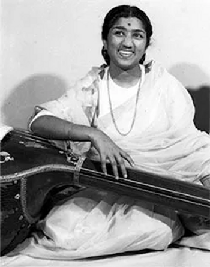

Lata Mangeshkar
28th September, 1929 - 6th February 2022
Bharat Ratna
Introduction:
Welcome to a tribute page dedicated to the Nightingale of India, the legendary playback singer, Lata Mangeshkar. With a career spanning seven decades, Lata Mangeshkar is not just a singer; she is a cultural icon and a voice that has defined generations.Early Life:
Born on September 28, 1929, in Indore, India, Lata Mangeshkar hails from a family deeply rooted in classical music. Her father, Dinanath Mangeshkar, was a renowned classical vocalist, and it was in this musical environment that Lata's extraordinary talent began to blossom.Musical Journey:
Lata Mangeshkar 's journey into the world of playback singing began in the 1940s. She made her playback singing debut in the Marathi film "Kiti Hasaal" (1942) and soon ventured into Hindi cinema. Lata's ethereal voice and versatility quickly captivated audiences, earning her a special place in the hearts of millions.Timeless Hits:
Lata Mangeshkar 's discography boasts an unparalleled range of songs, from soulful melodies to peppy numbers. Some of her timeless classics include "Lag Jaa Gale," "Aayega Aanewala," "Tere Bina Zindagi Se," and "Pyar Kiya To Darna Kya." Her collaborations with music maestros like R.D. Burman and S.D. Burman have resulted in unforgettable musical gems.Awards and Accolades:
Lata Mangeshkar 's contribution to Indian music has been duly recognized with numerous awards. She has been honored with the Bharat Ratna, India's highest civilian award, in addition to multiple National Film Awards and Filmfare Awards. Her name is synonymous with excellence in playback singing.Legacy:
Beyond the sheer numbers and accolades, Lata Mangeshkar 's legacy lies in her ability to convey emotion through her voice. Her renditions have a timeless quality that continues to resonate with music lovers across the globe. From romantic ballads to devotional hymns, her versatility is unmatched.Philanthropy and Persona:
Apart from her musical contributions, Lata Mangeshkar has been actively involved in philanthropy and social causes. Her humility and dedication to the arts have made her an inspiration for aspiring singers and a revered figure in the industry. This tribute page is a humble acknowledgment of the indelible mark Lata Mangeshkar has left on the world of music. As we celebrate her life and artistry, let's immerse ourselves in the magic of her voice, a voice that transcends time and continues to echo in the hearts of music enthusiasts everywhere. Lata Mangeshkar , the melody of your music will forever be etched in the symphony of our memories.Non-singing career
Music direction
Lata Mangeshkar composed music for the first time in 1955 for the Marathi movie Ram Ram Pavhane.
Later in the 1960s, she composed music for following Marathi movies under the pseudonym of Anand
Ghan.
- 1950 - Ram Ram Pavhana
- 1963 - Maratha Tituka Melvava
- 1963 - Mohityanchi Manjula
- 1965 - Sadhi Manase
- 1969 - Tambadi Mati
She won Maharashtra State Government's Best Music Director Award for the film Sadhi Manase. The song "Airanichya Deva Tula" from the same film received best song award.
Production
Lata Mangeshkar has produced four films:
- 1953 - Vaadal (Marathi)
- 1953 - Jhaanjhar (Hindi), co-produced with C. Ramchandra
- 1955 - Kanchan Ganga (Hindi)
- 1990 - Lekin... (Hindi)